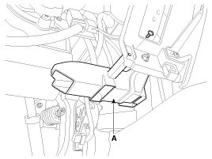
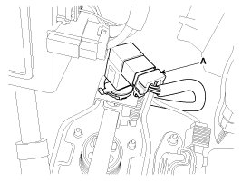
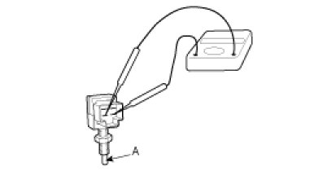
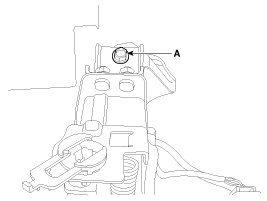
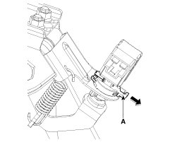
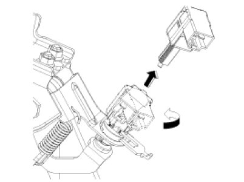
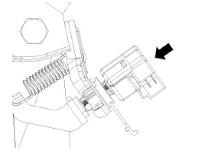
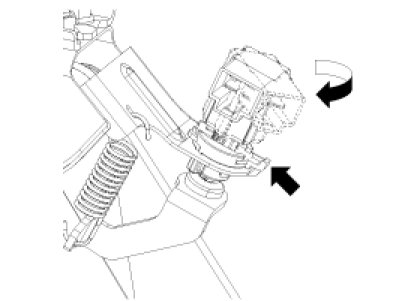
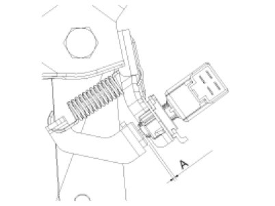

Repair Procedures
Removal
1. Turn ignition switch OFF and disconnect the negative (-) battery cable.
2. Remove the crash pad lower panel.
3. Remove the shower duct (A).

4. Disconnect the stop lamp switch connector (A), and than remove stop lamp switch.

5. Remove the brake pedal member mounting bolt (A).
6. Remove the snap pin (A) and clevis pin (B).

7. Remove the brake pedal member assembly mounting nuts and then remove the brake pedal assembly.

Inspection
1. Check the bushing for wear.
2. Check the brake pedal for bending or twisting.
3. Check the brake pedal return spring for damage.
4. Check the stop lamp switch.
(1) Connect a circuit tester to the connector of stop lamp switch, and check whether or not there is continuity when the plunger of the stop lamp switch is pushed in and when it is released.
(2) The stop lamp switch is in good condition if there is no continuity when plunger(A) is pushed.

Installation
1. Pre-tighten the bracket fixing bolt (A) in dash panel.

2. Install the brake booster and brake pedal member fixing nuts (A) securely.
Tightening torque:
16.7 - 25.5 N.m (1.7 - 2.6 kgf.m, 12.3 - 18.8 lb-ft)
3. Tighten the bolt (A) securely in dash panel.
Tightening torque:
16.7 - 25.5 N.m (1.7 - 2.6 kgf.m, 12.3 - 18.8 lb-ft)
4. Install the snap pin (A) and clevis pin (B).
CAUTION:
- Before installing the pin, apply the grease to the clevis pin.
- Use a new snap pin whenever installing.
5. Install the stop lamp switch securely.
6. Connect the stop lamp switch connector (A).
7. Adjust the brake pedal height and free play.
8. Check the brake pedal operation after installing the brake pedal.
9. Install the shower duct (A).
10. Install the crash pad lower panel.
11. Reconnect the battery negative cable.
Adjustment
Stop lamp switch clearance adjustment
If the gap between stop lamp switch and bracket is not 1.0 - 2.0mm(0.04 - 0.08in), conform to below.
1. Disconnect the stop lamp switch connector (A).
2. Pull the locking plate (A) as indicated by the arrow.

3. Turn stop lamp switch 45° counterclockwise and remove it.

4. Fix the brake pedal arm and insert fully the stop lamp switch as hiding contact part.

5. After inserting, turn the stop switch (A) 45° clockwise, and then assemble locking plate (B) by pushing.

6. Confirm the gap between stop lamp switch and bracket.
Stop lamp clearance:
1.0 - 2.0 mm (0.04 - 0.08 in.)

7. Connect the stop lamp switch connector.